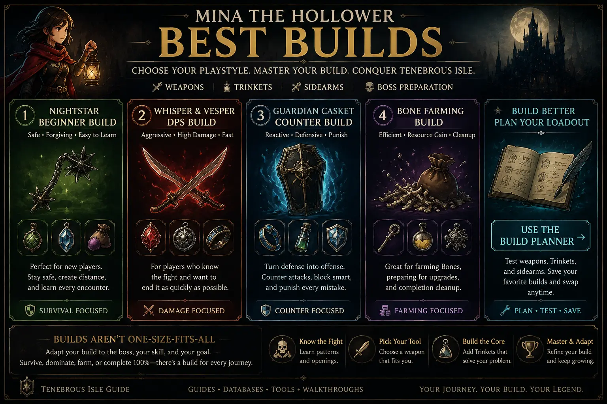

Quick answer: what is the best build?
The best build is the one that fixes your current failure point. If you are dying before learning patterns, use survival. If you already know the boss, use DPS. If you are short on Bones, use a farming build.
This guide ranks builds by purpose rather than pretending one loadout is perfect for the entire game. Mina the Hollower rewards adaptation. A safe exploration build, a boss learning build, and a high-damage build should not be the same thing.

Safe Cleanup Build
The best build for 100% cleanup is not always the highest-damage build. When you are revisiting old areas, checking missed Trinkets, or finishing achievement-specific tasks, consistency matters more than speed.
Use a weapon you can control, then add Trinkets that make exploration safer, reduce mistakes, or help with resource recovery. For full completion routing, use this page together with the 100% Cleanup Checklist, 100% Achievement Guide, and Best Weapons Guide.
Best builds by playstyle
Nightstar Survival Build
This is the best build for new players because it gives you two things beginners need most: distance and forgiveness. Nightstar lets you attack from safer spacing, while survival Trinkets reduce the punishment from learning boss patterns slowly.
Whisper & Vesper Damage Build
This build is for players who already understand timing and want to end fights faster. Whisper & Vesper rewards close-range pressure, while damage-focused Trinkets turn clean hits into stronger burst windows.
Blaststrike Maul Punish Build
The maul rewards patience. You should not swing because you can; you should swing because the enemy has committed. This build works best when you stop chasing hits and start punishing openings.
Guardian Casket Counter Build
This build turns defense into pressure. It is not ideal for a first playthrough unless you enjoy reactive combat, but it becomes strong when you can read attacks calmly and recover without panic.
Bone Farming Build
This is not a boss build. It is a preparation build. Use it when you need Bones, vendor purchases, or cleanup resources, then swap back to a combat setup before a serious fight.
Weapon comparison
| Weapon | Best Role | Who Should Use It |
|---|---|---|
| Nightstar | Safe spacing and beginner control. | New players, cautious players, and anyone learning boss patterns. |
| Whisper & Vesper | High DPS close-range pressure. | Aggressive players who can stay near enemies without panic. |
| Blaststrike Maul | Heavy punish windows and commitment damage. | Patient players who prefer reading attacks before swinging. |
| Guardian Casket | Counter-focused defensive play. | Players who enjoy parries, shields, and reactive combat. |
| Battery Buster | Mixed-range versatility. | Players who want flexibility instead of a single extreme style. |
How to choose your build
Do not choose a build because it has the highest theoretical damage. Choose it based on what is blocking you. If a fight ends before you learn the pattern, you need survival. If you can survive but the fight lasts too long, you need more damage. If you are low on resources, switch into farming before trying again.
The cleanest way to improve is to change one part of the build at a time. Change the weapon if the rhythm feels wrong. Change Trinkets if the problem is survivability, damage, recovery, or farming. Do not change everything after every death.
Best Builds FAQ
What is the best build for beginners?
The best beginner build is usually a safe weapon like Nightstar paired with survival Trinkets. This gives you enough spacing and forgiveness to learn the game instead of dying instantly.
What is the best damage build?
A fast weapon paired with damage-stacking Trinkets is the strongest damage direction, but it only works well if you can keep pressure without getting hit constantly.
Should I use the same build for exploration and bosses?
Not always. Exploration builds can use utility or farming Trinkets. Boss builds should focus on survival, damage, or counter tools depending on the fight.
Share Your Best Build
Share your weapon and Trinket setup, explain what it works best for, and mention any important weaknesses or difficult boss matchups.